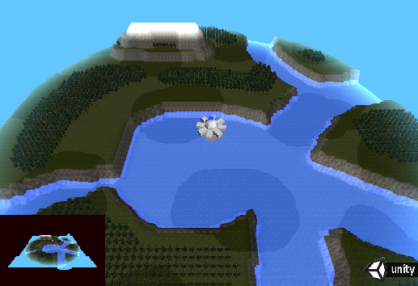

Joseph Cameron - Game Programmer Portfolio
Hello! I'm a recent graduate of the Game Development program at Algonquin College. Click here to take a look at my
resume.
Briefly, I'm comfortable programming in C, C++, C#. I have worked with Java and Objective-C in order
to setup an OpenGL, C++ environment for IOS and Android applications. I'm comfortable with various APIs including OpenGL, OpenAL.
In terms of web development, I'm comfortable with WebGL and Javascript. I have also worked with CakePHP and Wordpress.
If you'd like to take a look at some games and shader programs I've written, scroll down.
Projects
Conway's Game of Life in a compute shader
Implementation of Conway's Game of Life in a Direct X compute shader. Demonstrates how a shader program can be used to solve highly iterative but non-graphical
problems. The rules of Game of Life are quite simple. Given the way that shader programming makes you pose the problem makes the source code very legible.
Demo & full article
C#, HLSL, Unity.
WebGL Game Engine
Making something in WebGL seemed like a good idea for this portfolio. It's on the web, afterall. It was also a chance to use OpenGL in a new environment, and learn something about
Javascript along the way.
The project files are available here.
The project makes use of glMatrix, a useful graphics math library and Cannon a javascript based physics engine.
Demo & full article
Javascript, GLSL, WebGL, HTML, CSS.
C Renderer
3D renderer written in C (C89), using OpenGL ES 2.0. I used C89 and OpenGL for portability. I used the ES 2.0 standard specifically because that API standard
is so widly supported on modern (mobile) devices and because it plays nice with WebGL, which lets me use GLSL programs interchangably between this renderer
and the WebGL renderer.
Demo & full article
 |
C, OpenGL, cross-platform development.
Tower Defense
A 2D tower defense game I wrote from scratch. Renderer uses Direct X 9. Written in C++. I'm very happy with the technical design of this project.
The code is separated into a number separate projects and compiled together.
The purpose was to separate game code from the engine, separate the implementation of the graphics renderer from the graphics interface and
to seperate the entire program from the specifics of initializing itself on the Windows platform.
Demo & full article
 |
|
 |
C++, DirectX9, A* pathfinding, XML serialization.
Sushi Joint Rumble
A beat 'em up game with RPG leveling, skill unlocking, item purchasing.
This was the 3 semester long "capstone" project that is the final part of the Algonquin College Game Development program. I worked as the lead programmer on 5 man team.
It was a lot of work, documentation and a lot of fun.
Demo & full article
 |
 |
C#, Cg, Unity, Unity plugin programming.
RPG creator - Level editor & NPC scripting editor
Hardware accelerated 2D tile renderer, etc. etc.
Demo & full article.
C#, Cg, XML, Lua dynamic language interpretation, custom scripting API, cross-platform development
Speed King
This was a short game I worked on for the global game jam 2015. Team size was 2 people. I didnt end up submitting the game unfortunately,
due to an untimely 10 hour power outage on the final day.
 |
C#, Cg, Unity, Android development.
Railshooter
A 3D railshooter in the vein of StarFox. The player is constrained to a 2D coordinate within a 3D plane that moves from node to node.
C#, Cg, Unity.
Terrain maps on the GPU
Demonstrates the power of shader programs to create realtime interactive terrain environments. Takes advantage of Shader model 5.0, using a geometry shader
to add foliage to the scene. Height displacement, texturing, additional geometry are all generated in the shader according to a single texture map input.
Demo & full article
|  |
C#, Cg, Unity.
Voxel renderering on the GPU
Here are a couple of different demos I made while learning about procedural terrain. The first one here is not very fast, it was written entirely on the cpu.
Here I wrote a hardware accellerated voxel renderer which was much, much better. By encoding voxel data into textures, I could build voxel shapes in a
geometry shader at extremely high speeds.
Demo & full article
 |
C#, Cg, Unity.